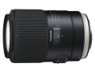

全新的90mm微距加入了多项先进功能，同时继承了前代产品优良的光学性能。VC光学防抖中新加入XY移动补偿功能，从无限远到微距全面提升图像稳定度。改进的USD超声波马达控制程序提升了自动对焦速度，并能在多种构图条件下获得最佳精度。另外，高规格的湿气和粉尘防护构造可抵抗环境侵扰，首枚镜片更是采用了高度耐用的氟涂层技术，可有效防止水汽凝结和油污沾染。
性价比很高的一只微距，做工手感成像都赞，防抖略遗憾
锐就不说了吧，微距头哪有不锐的，全开拍了个哥们的脸，感觉毛孔啥都太明显了…… 对焦速度不错，能感觉到马达在迅猛的工作，对焦时的感觉和尼康微型马达G定完全不一样，精度也很满意 外形，腾龙新的易拉罐造型很赞，虽然这个头据说结构上和F004比没啥改进，但这个外形的改动还是不错的。 买的二手，自然性价比很高啦，不过全新也比原厂便宜很多，也是很值得入手
材质金属质感失足，不过冬天从室外到室内外壳凝结水汽很明显，这点不如塑料镜筒的头…… VC，之前去五棵松试用A007就感觉开了防抖比不开防抖还虚，用了景深浅的微距头非常明显感觉到哪怕单次对焦模式，对焦完成后能感觉到防抖系统在动，取景器里图像从实到虚，很烦人，所以感觉最好对焦完成且觉得取景器里清晰就立刻按快门，时间把握不好防抖系统就全给你柔焦了……无忌上也有类似的讨论，说明不是个体问题，不过我也没用过105VR不确定是不是微距防抖全这德性，所以严谨的拍微距的话，要么上架，要么光线好快门够高关VC吧